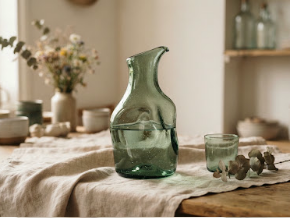
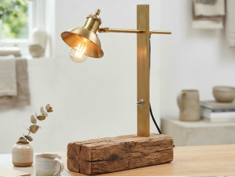
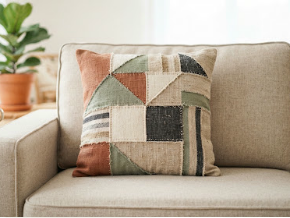
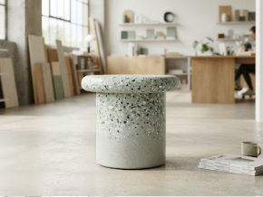
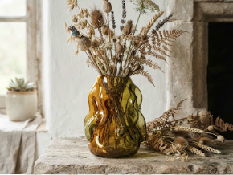
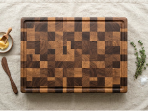
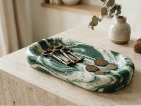
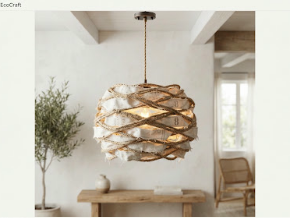

TRAÇABILITÉ MATIÈRE 100% VÉRIFIÉE
Chaque objet détourne des déchets nobles des filières d'enfouissement.
Livraison ferroviaire & routière compensée
Emballages 100% amidon de maïs compostable
Filière d'éco-conception française
Catalogue d'objets upcyclés pièces uniques
Des rebuts nobles réinventés en art de vivre durable. Chaque pièce est manufacturée à la main en série très limitée, traçable jusqu'au gisement source.
ESPACES:TousSalonArt de la tableELuminaire
DécorationMobilier
TRIER:Nouveautés d'atelier
MATIÈRE REVALORISÉE :Toutes les matières Bois revalorisé Tissus & Textiles Verre surcycléPlastiques techniques 8 pièces uniques disponibles
100% Bouteilles de vin recyclées
-4.2 kg CO₂
Série numérotée • 12 ex.

ART DE LA TABLE
Atelier SolVerre (Lyon)
Carafe Écume Brute
Fondue au four solaire basse température à partir de verre cullet…48 €
Ajouter TVA incluse
Lampe d'ambiance 'Bille
de Chêne' Poutre centenaire démontée d'une grange agricole, brossée à l'huile… 135 € Ajouter Garantie 5 ans
Coussin Géométrique'Parcelle'
Assemblage minutieux de surplus de filatures françaises et rembourrage en… 55 € Ajouter Fait main 100%
Assise Terrazzo 'Estran'
Thermo-pressage sans colle de bouchons et filets de pêche récupérés… 180 € Ajouter Inaltérable & lavable
Soliflore Organique'Goutte'
Façonné à la canne traditionnelle sans moule industriel, chaque reflet est le… 62 € Ajouter Signature pyrogravée


Affichage de 1 à 8 sur 24 créations disponibles
1
2
3
Page 1 sur 3